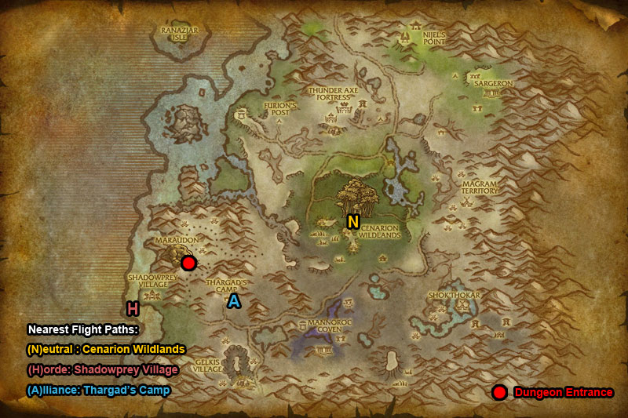
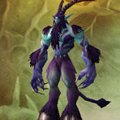
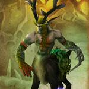

You can find the Maraudon The Wicked Grotto dungeon within Desolace, Kalimdor.
The coordinates are (29.9,63.0)
Click for Dungeon Entrance:



Go inside and follow the pathway round, go down some stairs.

For this dungeon entrance take the left (purple crystals) path. Stay on main path & take the first right.
Route:
Map 1Map 2


Bosses:
1. Tinkerer Gizlock2. Lord Vyletongue3. Celebras the Cursed
Quick Boss Tactics:
/i Watch out for the bombs thrown at a random player. Avoid his Goblin Dragon Gun attack (shoots fire in front of him).
/i Watch out for the bombs thrown at a random player. Avoid his Goblin Dragon Gun attack (shoots fire in front of him).

Quick Boss Tactics:/i Kill the Shadowstalker guards to get them out the way. Boss teleports around. Throws a Smoke Bomb which stuns players. Fires Multi-Shot hitting multiple players.

Quick Boss Tactics:/i Ignore the summoned Corrupt Forces & focus attacking boss. Watch out for Twisted Tranquility reducing players movement & time between their attacks. Wrath & Entangling Roots are Interruptible.